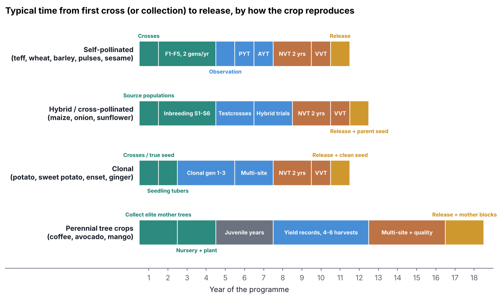
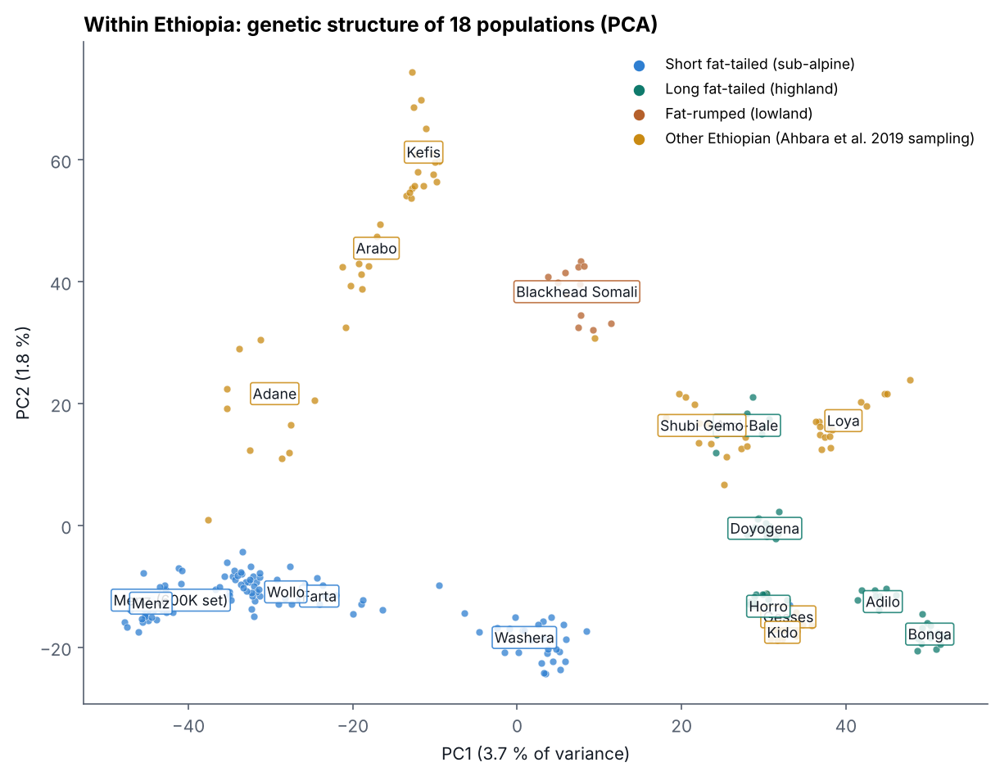

Start here: the crop advisor and the catalogue
Which crop, which variety, what to breed for
የትኛው ሰብል፣ የትኛው ዝርያ፣ ምን ለማሻሻል
60 major crops, vegetables, fruits and spices of Ethiopia: where each grows, the diseases and climate stresses to beat, the traits to breed for, and a finder that ranks registered varieties for your altitude, rainfall and priority.
Ethiopia's livestock breeds and crop varieties
የኢትዮጵያ የእንስሳትና የሰብል ዝርያዎች
Cattle, sheep, goats, chickens, camels, horses, donkeys and honeybees, plus the national Crop Variety Register. Searchable, every entry sourced, downloadable as CSV.
Modules ready now

Testing 60 teff varieties across locations and years
60 የጤፍ ዝርያዎችን በተለያዩ ቦታዎችና ዓመታት መሞከር
A breeder (or a seed company) has 58 new teff lines and must decide which to release, and where. Farmers pay for seed that wins in their field, in good years and bad.

Goats: breed better bucks, fatten for profit
ፍየሎች፦ የተሻሉ አውራ ፍየሎችን ማዳቀልና ለትርፍ ማደለብ
(A) A goat breeders' cooperative must decide which bucks to keep each season so that every new generation of kids grows faster.

The variety development plan: from parents to farmers' fields
የዝርያ ማሻሻያ ዕቅድ፦ ከወላጅ እስከ አርሶ አደሩ ማሳ
A variety is a product. Farmers buy it only if it beats what they grow, on their land, against the diseases and weather they face, and the grain sells.

Sheep: from the ground to a company
በግ፦ ከመሬት እስከ ኩባንያ
Ethiopia keeps about 42.9 million sheep, almost all of them indigenous.

Five agri-businesses to start around Debre Markos, A to Z
በደብረ ማርቆስ አካባቢ አምስት የግብርና ንግዶች፣ ከሀ እስከ ፐ
You live in or near Debre Markos (East Gojjam, Amhara) and have some savings, land or a group of farmers.
The road: from the ground to a company
Everything is reproducible: pip install -r requirements.txt, then python modules/01-teff-met/run.py. Code, field books and data are on GitHub.